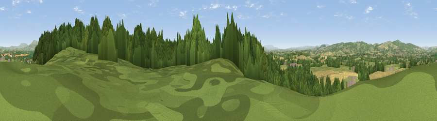

Viewpoint near Brimfield
#13559 in England · top 36% of its area beats it · near BrimfieldThe view, rendered

A 360° render of this exact spot computed from the terrain model, tree cover and land cover — summer colours, afternoon light, calibrated against photographs of famous viewpoints. Real trees, hedges and buildings will differ in detail.
The panorama
Grey silhouette: terrain skyline in each direction (720 bearings, Earth curvature and refraction included). Dashed green: skyline with trees (+15 m) and buildings (+8 m) as obstacles. Blue strip: how far the ground is visible on each bearing.
Where the view opens
Wedge length = distance to the farthest visible ground on that bearing (vegetation-aware). Rings at 10, 25 and 50 km.
What fills the view
42% grassland · 38% woodland · 19% cropland ·
Angular shares of the visible panorama (visual magnitude), not map area. Landscape diversity 0.47 (0–1 Shannon).
Key numbers
More beautiful places nearby
The staircase of upgrades: each row has a higher view potential than everything closer. Driving times are estimates from straight-line distance, calibrated against real road routing — check an actual route before setting out.
| Place | Direction | Drive | Score |
|---|---|---|---|
| Viewpoint near Brimfield | NE · 1 km | ~2 min | 60.9 |
| Viewpoint near Bockleton | ESE · 6 km | ~13 min | 61.5 |
| Viewpoint near Orleton | WNW · 6 km | ~13 min | 61.9 |
| Viewpoint near Richard's Castle | NW · 7 km | ~14 min | 71.0 |
| Viewpoint near Yarpole | WNW · 7 km | ~14 min | 78.1 |
| Gatley Hill | WNW · 9 km | ~17 min | 82.6 |
| Titterstone Clee | NNE · 14 km | ~26 min | 83.8 |
| North Hill | SE · 31 km | ~48 min | 86.8 |
52.28265, -2.69881 · source: screening · position refined by local search. Computed location — check access rights before visiting.